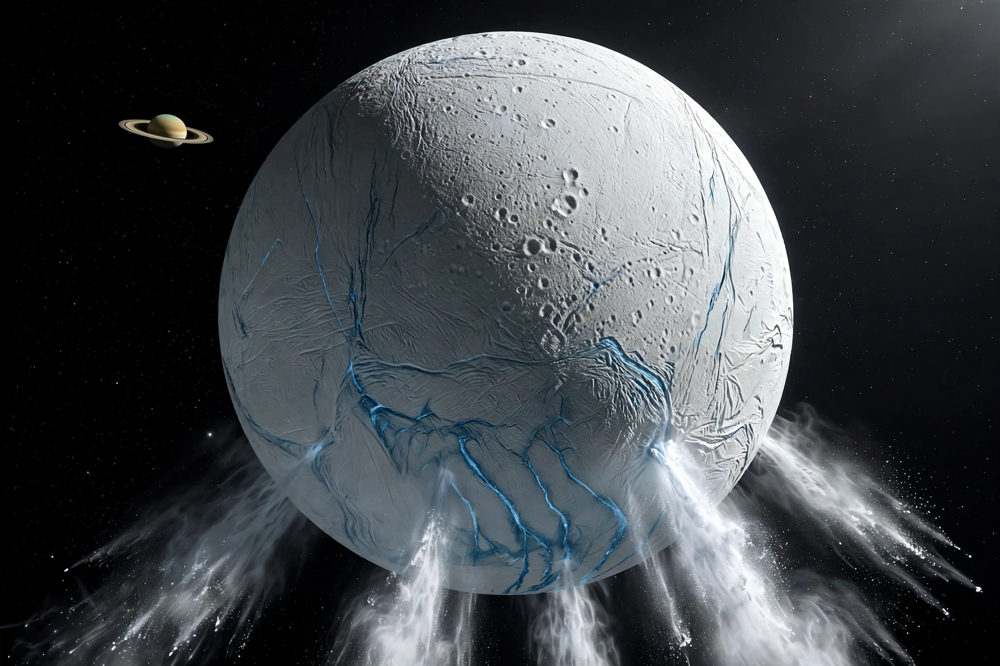

From Wikipedia, the free encyclopedia
| Enceladus | |
|---|---|
| Planet | Saturn |
| Discovered | 1789, by William Herschel |
| Diameter | About 500 km |
| Notable feature | South-polar water-ice geysers |

Enceladus is the sixth-largest moon of Saturn and one of the most reflective bodies in the Solar System, covered in clean water ice. It was discovered by William Herschel in 1789, but its fame dates from the Cassini mission, which in 2005 found plumes of water vapour and ice particles erupting from 'tiger stripe' fractures near its south pole.
The plumes are fed by a global salt-water ocean beneath the icy crust, kept liquid partly by tidal heating. Cassini flew through the plume and detected hydrogen, salts and organic compounds, making Enceladus one of the most promising places to search for extraterrestrial life — comparable with Jupiter's moon Europa, a target of Europa Clipper.